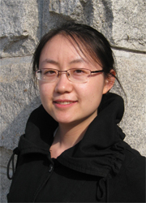

毕业典礼发言稿
尊敬的领导老师、亲爱的同学们，大家好！
我是来自经济学院2005级经济学专业的学生，我叫王鹤昕。今天做为东北师范大学毕业生中的普通一员，站在这里，能同即将离开净月校区这片土地的人们，以及还将继续留在这里的人们说点什么，我发自肺腑地感到荣幸。
同学们还记得四年前自己的样子吗？和我一个寝室的同学把大一时我们几个人的照片整理一下一起观看，当时全乐了！我们决定把那一组照片命名为：“还记得那年的我们有多囤！”是啊，刚刚步入大学校园的我们，一脸青涩，一身朴实，除了一套行李，身上没带来什
我是来自经济学院2005级经济学专业的学生，我叫王鹤昕。今天做为东北师范大学毕业生中的普通一员，站在这里，能同即将离开净月校区这片土地的人们，以及还将继续留在这里的人们说点什么，我发自肺腑地感到荣幸。
同学们还记得四年前自己的样子吗？和我一个寝室的同学把大一时我们几个人的照片整理一下一起观看，当时全乐了！我们决定把那一组照片命名为：“还记得那年的我们有多囤！”是啊，刚刚步入大学校园的我们，一脸青涩，一身朴实，除了一套行李，身上没带来什
么值钱的东西，我们带来的只有憧憬、希望和梦想，带着梦想，年轻的我们就启程了。四年后的今天，告别了人生一段花一样的年华，我们又要再次启程！有好多同学下午就要起身远行了，2005级东师净月的兄弟姐妹们，来！让我们先一起深呼吸一下，再次闻闻周围这熟悉的味道吧！在这四年里，净月的角角落落曾经留下我们多少足迹：荷花池边、紫光桥头、体育场上，留下多少有志青年们朗朗读书声，锻炼身体的矫健身影，和一对对情侣花前月下的甜蜜；多少个清晨，还没到八点开馆的时间，图书馆大厅就排上了长长的等待的队伍，那场面叫个壮观哪！多少个备战考试的夜里，寝室自习室的灯同我们一样彻夜未眠！还记得中午十二点时清脆的报时钟声吗？那是美丽的钟楼，请原谅它有时也有打盹的时候。还记得每天中午疲惫得蒙头大睡前必会听到那句响遍整个净月校区的话吗？——“总有一种声音让你铭记，总有一种精彩值得期待”。于是，在我们静静地期待中，校园广播圆满结束，我们顺利地进入梦乡。
刚刚迈入大学校门，是一位校领导在开学典礼上提醒了我们，原来我们和母校最终可以成为彼此的骄傲；大学的第一堂课上，是一位老师告诉我们：自己有钱不算是真有钱，将来有钱了不要忘了社会；大学后开的第一次运动会，第一次球赛，第一次拔河比赛，第一次上台讲话，第一次成功，第一次失败，都会看到年轻的辅导员和我们一起欢呼，或者一起流泪。
大四，顶着金融危机的压力，带着用人单位对师范学校非师范专业学生的不解，我们一路坚强走来。当在烈日下奔波辛苦工作的时候，也许你会想起在大学时那个同样烈日炎炎的日子，兄弟或者姐妹或者老师微笑着递上的一瓶矿泉水；当被老板痛骂一顿又被罚了一笔不小的钱财的时候，才会想起那些曾经令我们胆颤的老师们是那样的慈眉善目，只有他们在教训了我们之后还会原谅我们，还会耐心地给我们讲那些做人的道理。无论是外保的还是找工作的，只要走出这个校门多去些地方，才发现，我们的宿舍是这样的舒服，我们食堂的饭菜是这样的好吃又便宜，我们东师人的笑容是这样的温暖！作为东师人，我们曾经忽略了怎样的幸福！
亲爱的东师的09届的毕业生们，在心中为自己，为我们的学弟学妹，为我们的母校，为我们的生活加油吧！直面生活的艰辛，同时别忘了活着的幸福。
亲爱的东师的老师们，请原谅我们曾经的幼稚与荒唐，请记住我们曾经收获的欢笑与泪水，请相信我们坚定的信念，请祝福我们未来的征程！
亲爱的老师们请答应我们，保持好心情，保重好身体，平时都是你们说我们听，当十年，二十年，三十年后我们再相聚，那时也许咱们都已白发苍苍围坐在草地上，我们说，你们来听，好吗？
亲爱的东师2005级的同学们，到那时再相聚，希望大家勿忘彼此，跟兄弟姐妹你打招呼你可不要不理人，可要记得，2009年那个夏天，我们一同毕业。
最后，请允许我代表全体东北师范大学净月校区在2009年一起毕业的朋友们，向我们亲爱的母校行个礼，说上一句：谢谢，谢谢老师们！东师的老师，同学们，我爱你们！
刚刚迈入大学校门，是一位校领导在开学典礼上提醒了我们，原来我们和母校最终可以成为彼此的骄傲；大学的第一堂课上，是一位老师告诉我们：自己有钱不算是真有钱，将来有钱了不要忘了社会；大学后开的第一次运动会，第一次球赛，第一次拔河比赛，第一次上台讲话，第一次成功，第一次失败，都会看到年轻的辅导员和我们一起欢呼，或者一起流泪。
大四，顶着金融危机的压力，带着用人单位对师范学校非师范专业学生的不解，我们一路坚强走来。当在烈日下奔波辛苦工作的时候，也许你会想起在大学时那个同样烈日炎炎的日子，兄弟或者姐妹或者老师微笑着递上的一瓶矿泉水；当被老板痛骂一顿又被罚了一笔不小的钱财的时候，才会想起那些曾经令我们胆颤的老师们是那样的慈眉善目，只有他们在教训了我们之后还会原谅我们，还会耐心地给我们讲那些做人的道理。无论是外保的还是找工作的，只要走出这个校门多去些地方，才发现，我们的宿舍是这样的舒服，我们食堂的饭菜是这样的好吃又便宜，我们东师人的笑容是这样的温暖！作为东师人，我们曾经忽略了怎样的幸福！
亲爱的东师的09届的毕业生们，在心中为自己，为我们的学弟学妹，为我们的母校，为我们的生活加油吧！直面生活的艰辛，同时别忘了活着的幸福。
亲爱的东师的老师们，请原谅我们曾经的幼稚与荒唐，请记住我们曾经收获的欢笑与泪水，请相信我们坚定的信念，请祝福我们未来的征程！
亲爱的老师们请答应我们，保持好心情，保重好身体，平时都是你们说我们听，当十年，二十年，三十年后我们再相聚，那时也许咱们都已白发苍苍围坐在草地上，我们说，你们来听，好吗？
亲爱的东师2005级的同学们，到那时再相聚，希望大家勿忘彼此，跟兄弟姐妹你打招呼你可不要不理人，可要记得，2009年那个夏天，我们一同毕业。
最后，请允许我代表全体东北师范大学净月校区在2009年一起毕业的朋友们，向我们亲爱的母校行个礼，说上一句：谢谢，谢谢老师们！东师的老师，同学们，我爱你们！